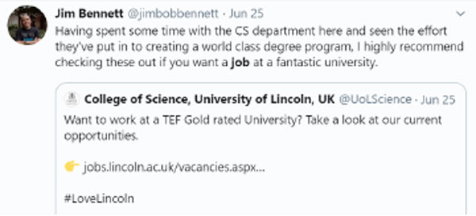

Hello
SoCS Level 2 Town Hall Meeting
Wayne Christian
Today’s Town hall Meeting will cover
Intro
The Big Bang
Opportunities
Professional Practice
Question & answer Time
All linked to alumni feedback
Welcome to Level 2
Well done so far!
Town Hall Concept
This is an opportunity for US to discuss positives and/or any improvements that WE can make to enhance your student experience
We have the same goals
We want you to do well, in the best possible environment!
I am the level 2 lead for CS and GC and its my job to feed this information back
Insights
What have you "liked" so far about your student experience.
(don't include nights out or sexual encounters!)
The Big Bang
Revalidations
The school has worked hard to revalidate the programmes with modules that better reflect the changing industries!
These have been developed along side Industry specialists
Net Result
New, more relevant, dynamic Modules
More equipment to play with (30 VR headsets, Azure IoT Developer kits and more)
The year of Work Placements
Samuel Cave
Placements Officer
College of Science Executive Office
scave@lincoln.ac.uk
"Don't assume that the job market
will be easy to get into, while you are studying work on creating a good network of contacts and stay in touch with them."
David Southgate Class of 2005
Currently a security assurance specialist at Vodafone
How to get a graduate job with the Top 300
OCTOBER:
•4th - RB
•7th - Capital One
•8th - Sky
•9th - HMRC
•10th - Boots
•14th - Siemens
•15th - Teach First
•16th - Microsoft
•22nd - National Probation Service
•23rd - Ofcom
•28th - BBC
Bookings open soon on www.uolcareers.co.uk Google, Charityworks, Marks & Spencer and more November onwards
Fika
A new App that promotes Emotional Fitness
"In university new opportunities sprout up every day, seek them out and dive in head first without hesitation. You never know who you may meet, where it could lead or what new interests and passions you may discover."
Alex Chapman
Class of 2017
Currently an embedded systems engineer at Tended
The Be Inspired! Lecture series
Are free and open to the public. It is a series of inspirational lectures and thought-provoking talks by successful figures under-represented in their field
A great way to network!
Great Lives
Each year the University of Lincoln welcomes high-profile individuals from all over the world to speak at our prestigious Great Lives lecture series. The series connects audiences with inspiring figures who are considered leaders in the worlds of business, sport, politics, science, and the arts.
Another great way to network!
Finding time to achieve anything
is much easier when you are a student - don't wait until you've graduated to start working on a personal project.
Chris Janes
Class of 2005
Currently a Senior Lecturer at the University of Suffolk
MTA

To sign up go to http://tiny.cc/uolmta
Please re-read the email Derek sent with all the background info to access the learning resources
Lincoln Award
•Enhance employability through skills development
•Gain recognition for achievements
•Microsoft Office Specialist (MOS) expert certification
BE A SPONGE!
Differentiate
You are working in a rapidly changing industry
Right now there are
"Computer Science" related jobs vacant in the UK
Live Source: Adzuna Jobs
With an average Salary of
£0.00
Live Source: Adzuna Jobs
44%
Above the National Average
Avg Salary
Right now there are
"Games" related Jobs vacant in the UK
Live Source: Adzuna Jobs
With an average Salary of
£0.00
Live Source: Adzuna Jobs
8.3%
Above the National Average
Avg Salary
The Importance of computer Science (ICT) to the UK economy
Great...So
Competition
In 2018 the number of CS graduates TOTALLED
0
Higher Education Student Statistics: UK, 2017/18
More and more companies expect
- Ideation
- Research
- Experimentation
- Development
- Refinement
- Collaboration
Dont Panic
What can we do differentiate ourselves (stand out)
"Always be on top of your portfolio, constantly adding and updating it. Make sure it’s easy to navigate and always put your best work first! It’s also not a bad idea to have a section just for your student work more so companies can see how you’ve progressed across uni and get an idea of how you will continue to progress."
Ben Wring
Class of 2017
QA Tester at Rockstar Games
CV and Portfolio Development
Start collating and documenting your work
Do collaborative personal projects to differentiate yourself
Start developing your CV / Cover letter
Get Certifications
Create an online portfolio and Github account with your projects
Create LinkedIn profile with completed skills section (link certification badges)
Use tools, themes (wordpress) and templates (CV) to start.
We will be putting on some additional workshops to support you
James Miller
Recent graduate awarded first class honours, industrial placement in level 2 with Hey Human in London.
Currently employed full time at Momentum World Wide.
Show off your work
Blog, Vlog, Film, Discuss, Test, Evaluate, Opinion-ate
This could lead to cool "paid" projects and jobs
Epic Mind Drive
Beer Pump
Mood Tree
Discussion
We have discussed some of the things you have liked so far and I have highlighted a few...
but what "things" could the School do/develop and/or improve on - Is there anything you would like discussed in the next Town hall meeting?
(don't include nights out or sexual encounters!)
Be a Sponge!
- Chat to your PERSONAL TUTOR
- Meet up with your MENTOR
- Check out the various OPPORTUNITIES
- Go to GUEST LECTURES
- Consider work PLACEMENTS
- Use Git Hub
- Start developing a Professional Profile (portfolio)
- Make the MOST out your 2nd year!